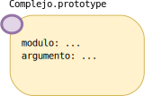

Introducción a JavaScript
Máster en Ingeniería Informática
Facultad de Informática
Universidad Complutense de Madrid
- Introducción
- JavaScript se parece a Java
- ...pero no es como Java
Introducción
El lenguaje Javascript
- Creado por Brendan Eich en 1995, para ser incluido en el navegador Netscape.
- Netscape colaboraba con Sun Microsystems, propietaria por entonces del lenguaje Java.
- Concebido como lenguaje «pegamento», destinado a integrar los distintos componentes de las páginas web: applets, plugins, etc.
Pero su destino fue bien distinto...
Principales hitos en la historia de Javascript
- 1997 - HTML Dinámico
Los programas modifican dinámicamente la estructura de un documento HTML mediante la manipulación de su DOM. - 2005 - AJAX
Los programas pueden realizar peticiones al servidor desde Javascript, lo que impulsó el paradigma de aplicaciones web de una sola página (SPA). -
2009 - Node.js
Permite utilizar Javascript en el lado del servidor.
Javascript y ECMAScript
- En el año 1996 Netscape decidió estandarizar Javascript.
- El estándar fue publicado por la organización Ecma International. El nombre del estándar era ECMAScript.
- La versión actual del estándar (13ª edición) es ECMAScript 2022 y fue publicada en junio de 2022.
Javascript en el navegador
- Los navegadores contienen un intérprete que permite ejecutar los programas Javascript en las páginas web.
- El componente del navegador encargado de ello recibe el nombre de motor Javascript.
- Motores Javascript más conocidos:
- SpiderMonkey, utilizado en Firefox.
- V8, utilizado en Chrome y Edge.
¿Y Node.js?
- Es un intérprete del lenguaje Javascript, pensado para ejecutarse fuera de un navegador.
- Su implementación está basada en el motor V8 de Chrome.

Un programa de ejemplo
// planets.js
// ----------
let planetas = [
"Mercurio", "Venus", "Tierra",
"Marte", "Júpiter", "Saturno",
"Urano", "Neptuno"
];
planetas.forEach(p => {
console.log(`¡Hola, ${p}!`);
}); Ejecución desde Node.js
node planets.js

Ejecución desde un navegador
- Es necesario un fichero HTML que incluya el script:
<!DOCTYPE html> <html> <head> <meta charset="utf-8"> <script src="planets.js" type="text/javascript"></script> </head> <body> </body> </html> - La salida del script puede observarse utilizando las herramientas del desarrollador del navegador (tecla F12).
Javascript se parece a Java...
El «Java» en Javascript
La sintaxis de Javascript está inspirada en la de Java.
-
Comentarios:
// Comentario de una línea /* Comentario de varias líneas */ - Declaraciones de variables y asignaciones:
let x = 3; let y = x + 1; y += 3; - Pre/postincremento, pre/postdecremento:
z = x++; --x;
Declaración de variables
-
Declaraciones
constpara variables inmutables.
Su valor no puede cambiar a lo largo del programa.const x = 1; x = 3; Error -
Declaraciones
letlet x = 1; x = 3; OK - Declaraciones
var(obsoletas).
Declaración de variables
- El hecho de que una variable sea
constno significa que el valor apuntado por ella sea inmutable.const xs = [1, 2, 3]; xs = [4, 5, 6]; Error xs[0] = 23; OK - Veremos más adelante cómo conseguir objetos inmutables.
Sentencias condicionales
-
If-then-else:
if (x < y) { return x; } else { return y; } -
Switch:
switch(day) { case 6: case 7: console.log("Es fin de semana"); break; default: console.log("Es día laborable"); }
Bucles
while,do...while,for.- No los utilizaremos demasiado.
- Si quieres recorrer un array, utiliza métodos de orden superior, o los bucles
for...of.
let arr = [4, 6, 10];
let sum = 0;
for (const x of arr) { sum += x; }
// o bien
const sum = arr.reduce((ac, x) => ac + x, 0);
for...in.
Funciones
- Definición de funciones:
function abs(x) { if (x < 0) { return x; } else { return -x; } } -
Llamadas a funciones y métodos:
x = abs(-3); console.log(`El valor absoluto de x es ${x}`);
Manejo de excepciones
-
Bloques try-catch o try-catch-finally:
try { funcion_no_existe(); } catch (e) { No se especifica el tipo de excepción console.error(e.message); } finally { console.log("Esto se ejecuta siempre"); } -
Lanzamiento de excepciones:
throw new Error("Fichero no encontrado"); -
Atributos de
Error:Error.message: mensaje de error.Error.stack: pila de ejecución.Error.name: nombre de la clase del error.
Cadenas de texto
- Inicialización:
o bienconst str = "Mi cadena";const str = 'Mi cadena'; -
Acceso al carácter i-ésimo:
str[1] // → "i"
- Métodos:
str.slice(2, 5); // → " ca" " vale ".trim(); // → "vale" str.split(" "); // → ["Mi", "cadena"] str.toUpperCase(); // → "MI CADENA" str.toLocaleUpperCase(); // → "MI CADENA" str.startsWith("Mi"); // → true "ab".repeat(5); // → "ababababab"
Cadenas plantilla
- Si delimitamos una cadena entre comillas invertidas (
`), podemos utilizar la sintaxis${...}para introducir expresiones Javascript en su contenido.
const nombre = "Araceli";
const edad = 27;
const cadena = `Me llamo ${nombre} y tengo ${edad} años`;
console.log(cadena);
// → Me llamo Araceli y tengo 27 años
console.log(`Pero el año que viene tendré ${edad + 1} años`);
// → Pero el año que viene tendré 28 años
Operadores
- Relacionales:
==,===,!=,!==,<,<=,>,>=! ! -
Aritméticos:
+,-,*,/,% -
Lógicos:
&&,||,! -
A nivel de bit:
&,|,^,>>,<<
Arrays
- Inicialización:
const x = [4, 6, "pepe", 1, 3]; const z = []; const m = new Array(3); - Acceso:
console.log(x[3]); // → 1 m[2] = "Elemento nuevo"; -
Longitud:
x.length // → 5 z.length // → 0 m.length // → 3
Clases
class Complejo {
constructor(real, imag) { Constructora de clase
this.r = real;
this.i = imag;
}
modulo() { Método
return Math.sqrt(this.r * this.r + this.i * this.i);
}
argumento() { Método
return Math.atan2(this.i, this.r);
}
}
const c1 = new Complejo(-3, 0);
console.log(c1.modulo());
...pero no es como Java
Las principales diferencias entre JavaScript y Java
(que nos interesen para este curso)
- JavaScript es dinámicamente tipado.
- Los objetos no tienen por qué ser instancias de clases.
- Valores indefinidos, nulos y NaN.
- Las conversiones invisibles.
- Argumentos que sobran, y argumentos que faltan.
- La referencia
thises de quita y pon. - La herencia basada en prototipos.
- Hay dos tipos de λ-expresiones
Javascript es dinámicamente tipado
Declaraciones de tipo
- En Javascript no es necesario indicar el tipo de variable a la hora de declararla:
let x; const z = "It's something"; let lista; - El tipo de una variable puede cambiar durante la ejecución:
let x = 3; // Empieza siendo un entero x = "Francisca"; // ...luego una cadena x = [1, 4, 5]; // ...y luego un array
Tipado estático vs dinámico
- Lenguajes de tipado estático (Java, Kotlin, C, C++)
- El compilador comprueba que las operaciones se aplican a argumentos del tipo correcto.
- Por ejemplo, el compilador de Java prohíbe cosas como
2.5 + "Hola".
- Lenguajes de tipado dinámico (Python, JavaScript, Lua)
- Se comprueba la coherencia de tipos durante la ejecución del programa.
- En JavaScript, la expresión
2.5 + "Hola"solo fallará cuando se tenga que evaluar durante la ejecución del programa.
Tipos en JavaScript
- Tipos primitivos
- Numérico
- Booleano
- Cadena
- Indefinido
- Nulo
- Tipos objeto
- Objeto
Tipos primitivos
- Los tipos primitivos son inmutables.
const str1 = "Cadena";
const str2 = str1.slice(0, 3); No modifica la cadena str1
console.log(str1); // → Cadena1
console.log(str2); // → Cad
const str1 = "Cadena";
const str2 = "Cadena";
str1 === str2; // → true
Los objetos no tienen por qué ser instancias de clases
Objetos en Javascript
Un objeto en Javascript no es más que una colección de atributos, cada uno de ellos asociado a un valor.
const x = {
nombre: "Ana María",
apellidos: "Gamboa Esteban",
edad: 54
};
Aquí se definen los atributos al crear el objeto.
El literal {} representa un objeto vacío (sin atributos)
const y = {};
Acceso a atributos
- Operador punto (
.), igual que en Java/Kotlin.x.apellidos // → "Gamboa Esteban" - o bien, mediante el operador corchete
x["apellidos"] // → "Gamboa Esteban"const atrib = "nombre"; x[atrib] // → "Ana María" - El acceso a una propiedad inexistente devuelve
undefinedx.noexiste // → undefined y.nombre // → undefined
Acceso a atributos
Es posible añadir atributos a objetos ya creados:
x.direccion = "Calle Bautista, 25";
y.nombre = "Javier";
console.log(x);
// { nombre: 'Ana Josefa', apellidos: 'Gamboa Esteban', edad: 55,
// direccion: "Calle Bautista, 25" }
console.log(y);
// { nombre: 'Javier' }
- La función
Object.keys()devuelve un array con los nombres de propiedades de un objeto:let x = { nombre: "Ana María", apellidos: "Gamboa Esteban", edad: 54 }; console.log(Object.keys(x)); // [ 'nombre', 'apellidos', 'edad' ] - El operador
inpermite determinar la existencia de un atributo dentro de un objeto:if ("edad" in x) { console.log("x tiene un atributo llamado 'edad'"); }
Igualdad de objetos
- Cuando se aplica el operador
==o===sobre objetos, se comprueba que las referencias a ambos lados del operador apuntan al mismo objeto.
let coords1 = { x: 20, y: 30 };
let coords2 = { x: 20, y: 30 };
let coords3 = coords1;
console.log(coords1 === coords2);
// → false
console.log(coords1 === coords3);
// → true
Métodos en objetos
- Podemos definir métodos dentro de los objetos:
const coords = { x: 20, y: 30, imprimir() { console.log(`Coordenadas: (${this.x}, ${this.y})`) } }; - Dentro de un método, la variable
thishace referencia al objeto sobre el cual se realiza la llamada al método:coords.imprimir(); // 'this' toma el valor 'coords'
Valores indefinidos, nulos y NaN
El valor indefinido (undefined)
Se utiliza para las variables no inicializadas y para atributos no existentes dentro de objetos.
let coordenadas = { x: 5, y: 6 };
let v;
console.log(v); // → undefined
console.log(coordenadas.z); // → undefined
El valor nulo (null)
Se utiliza para denotar una referencia a objeto nula.
let x = null; // La variable 'x' esta inicializada, pero a una
// referencia nula.
console.log(x); // → null
El valor Not-a-Number (NaN)
- Se devuelve como resultado de operaciones aritméticas incorrectas:
Math.log(-2) // → NaN
parseInt("x2d") // → NaN
NaN!
Math.log(-3) === NaN // → false
NaN === NaN // → false
Si se quiere determinar si una operación ha dado NaN como resultado, debe utilizarse la función isNaN:
isNaN(NaN) // → true
isNaN(Math.log(-3)) // → true
Las conversiones invisibles
Conversiones Javascript
¿A qué valor se evalúan las siguientes expresiones?
"3" * 4 // → 12
3 * 4 // → 12
"3" * "4" // → 12
"3" * "pepe" // → NaN
"12" + "20" // → 1220
"12" + 20 // → 1220
12 + "20" // → 1220
Math.log10("1000") // → 3
"10" < "2" // → true
"10" < 2 // → false
¿En qué casos se cumple la condición del if?
if (23) { .... } // → se cumple
if (-1) { .... } // → se cumple
if (0) { .... } // → no se cumple
if ("Pepe") { .... } // → se cumple
if ("") { .... } // → no se cumple
if ([1, 3]) { .... } // → se cumple
if ([]) { .... } // → se cumple
if (null) { .... } // → no se cumple
if (undefined) { .... } // → no se cumple
Cómo evitar confusiones
Con este panorama, hay dos alternativas:
- Aprenderse concienzudamente las reglas de conversión de Javascript:
Información: https://www.freecodecamp.org/news/js-type-coercion-explained-27ba3d9a2839/
-
[Recomendado] Hacer las conversiones explícitamente, en caso de no estar seguro/a del tipo de una expresión
Funciones
Number(...),String(...),Boolean(...)
Operadores de igualdad
x === y- Igualdad estrictaxeyson del mismo tipo y tienen el mismo valor.x == y- Igualdad flexiblexeypueden convertirse al mismo tipo, de modo que tras hacer la conversión tienen el mismo valor.
"25" == 25 // → true
"25" === 25 // → false
false == 0 // → true
"" == 0 // → true
2.0 === 2 // → true (recuerda: no se distingue entre tipo
// de enteros y de coma flotante)
También se definen != y !== como la negación de == y === respectivamente.
Moraleja
=== y !==Argumentos que sobran y argumentos que faltan
Definición de una función
- Supongamos la siguiente definición:
function imprime_args(p1, p2, p3) { console.log(`p1: ${p1}`); console.log(`p2: ${p2}`); console.log(`p3: ${p3}`); } - La llamada
imprime_args(1, "bar", true)imprime el siguiente resultado:p1: 1 p2: bar p3: true
Argumentos en una llamada
- El número de argumentos en la llamada a una función no ha de coincidir necesariamente con el número de parámetros en la definición.
- Si se proporcionan argumentos «de más» se ignoran los sobrantes:
imprime_args("uno", "dos", "tres", "cuatro");p1: uno p2: dos p3: tres
Argumentos en una llamada
-
Si faltan argumentos, los parámetros correspondientes tomarán el valor
undefinedimprime_args("uno", "dos");p1: uno p2: dos p3: undefined
Parámetros opcionales en una función
/*
El parámetro 'color' es opcional. Su valor por defecto
es 'negro'.
El parámetro 'trazo' especifica el grosor del trazo y
también es opcional. Su valor por defecto es 1.
*/
function pintar_circulo(x, y, color, trazo) {
if (color === undefined) color = "negro";
if (trazo === undefined) trazo = 1;
console.log(`Pintar círculo en (${x}, ${y}) de color ${color}` +
` y trazo de grosor ${trazo}`;
}
Sintaxis específica de parámetros opcionales
/*
El parámetro 'color' es opcional. Su valor por defecto
es 'negro'.
El parámetro 'trazo' especifica el grosor del trazo y
también es opcional. Su valor por defecto es 1.
*/
function pintar_circulo(x, y, color = "negro", trazo = 1) {
console.log(`Pintar círculo en (${x}, ${y}) de color ${color}` +
` y trazo de grosor ${trazo}`;
}
La referencia
this es de quita y pon
El puntero this
- Recordemos que podemos definir métodos dentro de objetos:
const coords = { x: 20, y: 30, imprimir() { console.log(`Coordenadas: (${this.x}, ${this.y})`) } } - El valor de
thisse determina exclusivamente en el momento de llamar al método, independientemente de dónde está declarado.
Ejemplo
- Asignamos el método
imprimirdecoordsa una variablef, y llamamos a esa función:const coords = { ... imprimir() { console.log(`Coordenadas: (${this.x}, ${this.y})`) } } const otro = { x: 40, y: 50, f: coords.imprimir }; otro.f(); // 'this' toma el valor 'otro' // Imprime: "Coordenadas: (40, 50)" - Independientemente de que
imprimirpertenezca al objetocoords, al llamar a esa función con otro receptor (otro), la referenciathisapunta aotro.
¿Y si no hay receptor?
const coords = {
...
imprimir() {
console.log(`Coordenadas: (${this.x}, ${this.y})`)
}
}
const f = coords.imprimir;
f(); // 'this' toma el valor 'undefined'
- Cuando una función se llama sin objeto receptor, el valor de
thisesundefined.
El objeto this
- Toda función tiene implícito un parámetro
this, aunque se defina fuera de una clase o fuera de un objeto:function miFuncion() { console.log(this.x); } - Si a esa función se le llama con un objeto receptor, el objeto
thisapuntará a ese objeto. Si no, tomará el valorundefined.f(); // 'this' toma el valor 'undefined', // por lo que 'this.x' falla const o = { x: 30, g: f }; o.g(); // 'this' toma el valor 'o'
¿Por qué es esto relevante?
- Supongamos el siguiente código:
const a = [1, 3, 2]; const str = "Madrid"; console.log(a.map(str.charAt)); - Aunque el método
charAtpasado amappertenezca al objetostr, este método se va a llamar dentro demapsin objeto receptor.Uncaught TypeError: String.prototype.charAt called on null or undefined at charAt () at Array.map ( )
¿Cómo se soluciona?
- Evitando pasar directamente métodos como parámetros a funciones de orden superior.
- Utilizando, en su lugar, λ-expresiones para que quede claro quién es el objeto receptor.
const a = [1, 3, 2];
const str = "Madrid";
console.log(a.map(x => str.charAt(x)));
// ['a', 'r', 'd']
bind() [+]La herencia basada en prototipos
Prototipo de un objeto
Todo objeto en Javascript tiene un puntero «secreto» que puede apuntar a otro objeto:

... o puede ser un puntero nulo:

Prototipo de un objeto

En el primer caso decimos que el objeto apuntado es prototipo de c1.
Cadena de prototipos
A su vez, el prototipo de c1 puede tener otro prototipo:

De este modo tenemos una cadena de prototipos, que acabará en un objeto no tenga prototipo.
Búsqueda de atributos
¿Qué ocurre cuando se accede al atributo de un objeto?
Supongamos la expresión c1.nombre
c1.nombre

En primer lugar se intenta buscar un atributo llamado nombre dentro de c1.
c1.nombre

Si no se encuentra en c1, se busca el atributo dentro del prototipo de c1.

Si no se encuentra en el prototipo de c1, se busca dentro del prototipo del prototipo de c1. Si no se encuentra allí, la búsqueda continúa por la cadena de prototipos hasta que:
- Se encuentre el atributo en algún objeto de la cadena.
- Se llegue al final de la cadena. En este caso la expresión
c1.nombrese evalúa aundefined.
Clases y prototipos
- Cada vez que se define una clase
C, se crea un objetoC.prototypeque contiene los métodos de esa clase.class Complejo { constructor(real, imag) { this.r = real; this.i = imag; } modulo() { ... } argumento() { ... } }

Clases y prototipos
- Cuando se crea una instancia de una clase
C, el prototipo del objeto recién creado esC.prototype.const c = Complejo(-1, -2);
Herencia entre clases
- Cuando una clase
Chereda de una claseD, el objetoC.prototypetiene a su vez, como prototipo al objetoD.prototype.class Persona { constructor(nombre, edad) { ... } ... } class Empleado extends Persona { constructor(nombre, edad, sueldo) { super(nombre, edad); this.sueldo = sueldo; } ... }
Herencia entre clases
const e = new Empleado("Elena", 23, 2000);
Herencia entre clases
- Si una clase
Cno tiene herencia, su prototipo esObject.prototype.
Objetos prototype conocidos
- Todas las cadenas tienen a
String.prototypecomo prototipo. - Todos los números tienen a
Number.prototypecomo prototipo. - Todos los arrays tienen a
Array.prototypecomo prototipo. - Todas las funciones tienen a
Function.prototypecomo prototipo. - Todo lo anterior tiene a
Object.prototypecomo prototipo.
¿Para qué sirve esto?
- Los objetos
prototypeson extensibles. - Si añadimos un método a un prototipo, este método estará disponible para cualquier instancia que apunte a ese prototipo.
- No solo las instancias futuras, sino también las ya existentes.
- Con esto tenemos un mecanismo similar a los métodos extensión de Kotlin.
Ejemplo: extender String
String.prototype.endsWithVowel = function() {
return ["a", "e", "i", "o", "u"].some(
v => this.toLowerCase().endsWith(v)
);
}
"Hola".endsWithVowel(); // → true
Ejemplo: extender Number
Number.prototype.increment = function() {
return this + 1;
}
const x = 4;
console.log(x.increment()); // Imprime '5'
Hay dos tipos de λ-expresiones
Funciones anónimas
Hay dos maneras de definir funciones anónimas:
- Mediante
function: - Mediante la flecha (
=>):
function(args) { body }
[1, 2, 3].map(function(x) { return x * 2; });
(args) => { body }
[1, 2, 3].map(x => { return x * 2; });
Funciones anónimas
- Si utilizamos la flecha
=>y el lado derecho es de la forma{ return expr; }, podemos omitir las llaves y elreturn:[1, 2, 3].map(x => x * 2);
function y => no son equivalentes
- Recordemos que toda función tiene una variable
thisen ámbito. - Supongamos la siguiente función anónima:
function() { return this.x; } - Cuando llamemos a esta función, el valor de
thisserá el del objeto receptor de esa llamada.const o = { x: 10 }; o.f = function() { return this.x; }; console.log(o.f()); // En este caso, `this` apunta a `o` // Imprime '10'f = function() { return this.x; }; console.log(f()); // En este caso `this` es `undefined`
function y => no son equivalentes
- Ahora supongamos la misma función, pero definida mediante
=>:() => this.x - Cuando llamemos a esta función, el valor de
thisserá el del contexto en el que se encuentre la λ-expresión.const coords = { x: 10, g() { const f = () => this.x; // Este 'this' es el mismo que el del // método g console.log(f()); } }coords.g() // Imprime '10'
Resumen
- Una función anónima definida mediante
functionintroduce siempre un contexto nuevo parathis. - Una función anónima definida mediante
=>reutiliza el mismo contexto dethisen el que está definida.
Resumen (en la práctica)
- Utiliza
functioncuando definas métodos en una clase o en un prototipo:Number.prototype.multiplyByTwo = function() { return this * 2; } - Utiliza
=>cuando pases funciones anónimas como parámetros a funciones de orden superior (map,filter, etc.)[1, 6, 4, 7].filter(x => x % 2 == 0);
Bibliografía
- A. Rauschmayer
JavaScript for impatient programmers (2022)
https://exploringjs.com/impatient-js/index.html -
JavaScript reference
Mozilla Developer Network
https://developer.mozilla.org/en-US/docs/Web/JavaScript/Reference